<div class="navbar bg-[#142740] flex justify-center items-center align-center" style="padding: 1%;">
  <div class="navbar-start">
    <div class="dropdown lg:hidden">
      <div tabindex="0" role="button" class="btn btn-ghost float-right">
        <svg xmlns="" class="h-5 w-5" fill="none" viewBox="0 0 24 24" stroke="currentColor">
          <path stroke-linecap="round" stroke-linejoin="round" stroke-width="2" d="M4 6h16M4 12h8m-8 6h16"
            color="white" />
        </svg>
      </div>
      <ul tabindex="0" class="menu menu-sm dropdown-content mt-12 z-[1] p-2 shadow bg-base-100 rounded-box w-52">
        <li><a (click)="navigateToPlayers()">Jugadores</a></li>
        <li><a (click)="navigateToReports()">Informes</a></li>
        <li><a (click)="navigateToGraph()">Estadísticas</a></li>
      </ul>
    </div>
    <a href="./home">
      
    </a>
  </div>
  <div class="navbar-center hidden lg:flex text-white">
    <ul class="menu menu-horizontal px-8">
      <li><a routerLink="/players" routerLinkActive="active" [routerLinkActiveOptions]="{ exact: true }"
          class="text-xl">Jugadores</a></li>
      <li><a routerLink="/reports" routerLinkActive="active" [routerLinkActiveOptions]="{ exact: true }"
          class="text-xl">Informes</a></li>
      <li><a routerLink="/graph" routerLinkActive="active" [routerLinkActiveOptions]="{ exact: true }"
          class="text-xl">Estadísticas</a></li>
    </ul>
  </div>
  
  <div class="navbar-end">
    <div class="flex items-center gap-5">
      <!-- Icono de home-->
      <div class="max-h-1 flex items-center">
        <a [routerLink]="['/home']" routerLinkActive="active" class="text-white hover:text-custom-yellow"
          [routerLinkActiveOptions]="{ exact: true }">
          <i class="fas fa-home text-2xl"></i> <!-- Tamaño grande del icono -->
        </a>
      </div>
      <!-- Icono de user -->
      <div class="dropdown dropdown-end">
        <div tabindex="0" role="button" class="btn btn-ghost btn-circle avatar">
          <div class="w-13 rounded-full">
            
          </div>
        </div>
        <ul tabindex="0" class="mt-3 z-[1] p-2 shadow menu menu-sm dropdown-content bg-base-100 rounded-box w-52">
          <li>
            <a [routerLink]="['/#']">
              <span>Perfil</span>
              <span class="text-xs text-gray-400 ml-1">(En construcción)</span>
              <!-- Texto indicando que está en construcción -->
            </a>
          </li>
          <li><a [routerLink]="['/']">Cerrar Sesión</a></li>
        </ul>
      </div>
    </div>
  </div>
</div>